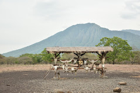

Banyuwangi juga memiliki sejarah yang panjang dan terbentuknya kota Banyuwangi.
Kawah Ijen
Gunung Ijen adalah sebuah gunung berapi yang terletak di perbatasan Kabupaten Banyuwangi dan Kabupaten
Bondowoso, Jawa Timur, Indonesia.
Gunung ini memiliki ketinggian 2.386 mdpl. Gunung Ijen terakhir meletus pada tahun 1999.
Wisatawan Lokal: Rp5.000 (Senin-Jumat) dan Rp7.500 (Sabtu & Minggu) Wisatawan Mancanegara: Rp100.000 (Senin &
Jumat) dan Rp150.000 (Sabtu & Minggu).
Taman Nasional Baluran

Taman Nasional Baluran adalah salah satu taman nasional di Indonesia yang terletak di wilayah Banyuputih,
Situbondo, Jawa Timur, Indonesia.
Namanya diambil dari nama gunung yang berada di daerah ini, yaitu Gunung Baluran.
Harga tiket masuk ke Taman Nasional Baluran per tahun 2023: Wisatawan nusantara Rp 16.000 saat hari kerja dan Rp
18.500 saat hari libur.
Wisatawan mancanegara Rp 165.000 saat hari kerja dan Rp 240.000 saat hari libur.
Biaya kendaraan roda 2 adalah Rp 5.000 saat hari kerja dan hari libur.